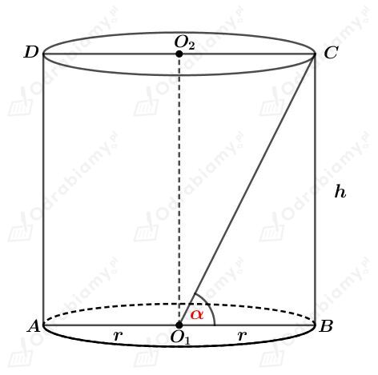
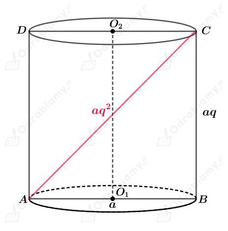
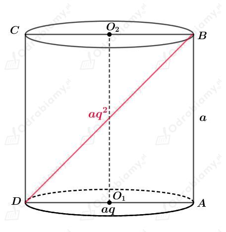
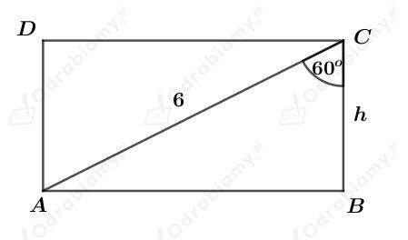
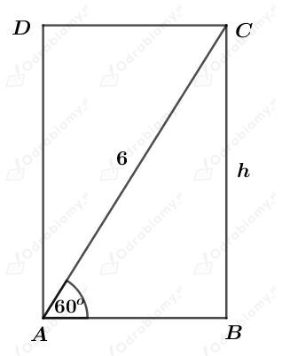
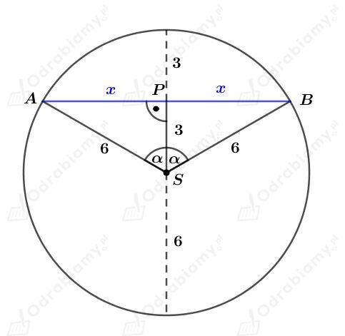
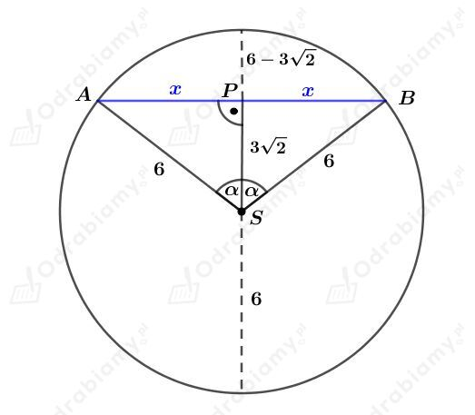

Dany jest walec, którego długość promienia podstawy wynosi r, a długość wysokości wynosi h.
Walec ten został przecięty płaszczyzną równoległą do jego przekroju. Otrzymano w ten sposób prostokąt ABCD o polu S.
Otrzymujemy zatem:
Trójkąt AO1B jest prostokątny oraz |AO1|=|O1B|=r.
Korzystając z twierdzenia Pitagorasa dla trójkąta AO1B mamy:
Obliczmy pole przekroju osiowego. Mamy:
| Objętość walca o promieniu podstawy r i wysokości długości h wyraża się wzorem: gdzie Pp jest polem powierzchni podstawy walca. |
Rysunek:

Korzystając z funkcji tangens mamy:
a)
Wiedząc, że pole tego przekroju jest równe S mamy:
Obie strony równości są dodatnie, więc mamy:
Wyznaczmy długość wysokości h. Mamy:
Wyznaczmy objętość tego walca. Mamy:
b)
Wiemy, że
Korzystając z twierdzenia Pitagorasa dla trójkąta ABC mamy:
Wyznaczmy długość wysokości h. Mamy:
Wyznaczmy objętość tego walca. Mamy:
W pudełku mającym kształt walca można zmieścić trzy piłki tenisowe o średnicy długości 6,4 cm każda.
Średnica 2r pudełka jest co najmniej taka jak średnica piłki. Mamy więc:
Wysokość pudełka h jest co najmniej taka jak trzy średnice piłek. Mamy więc:
Pole powierzchni bocznej jest zatem co najmniej równe:
Odp. Tak, pole powierzchni bocznej tego pudełka jest większe niż 3 dm2.
Przekrojem osiowym walca jest prostokąt ABCD. Długości boków AB i BC oraz przekątnej AC są kolejnymi wyrazami ciągu geometrycznego.
Pierwszy przypadek
Rysunek:

Korzystając z twierdzenia Pitagorasa dla trójkąta ABC mamy:
Korzystając ze wzoru skróconego mnożenia na kwadrat różnicy mamy:
Obie strony równości są dodatnie, więc mamy:
Wyznaczmy pole powierzchni bocznej tego walca. Mamy:
Wyznaczmy pole powierzchni podstawy tego walca. Mamy:
Wyznaczmy stosunek tych pól. Mamy:
Drugi przypadek

Tak samo jak w przypadku pierwszym, wiemy, że
Wyznaczmy pole powierzchni bocznej tego walca. Mamy:
Wyznaczmy pole powierzchni podstawy tego walca. Mamy:
Wyznaczmy stosunek tych pól. Mamy:
| Objętość walca o promieniu podstawy r i wysokości długości h wyraża się wzorem: gdzie Pp jest polem powierzchni podstawy walca. |
Dany jest walec o promieniu podstawy długości r i wysokości długości h.
Pierwszy przypadek
Naszkicujmy powierzchnię boczną walca:

Korzystając ze związku między długościami boków w trójkącie o kątach 30o, 60o, 90o mamy:
Odcinek AB jest długością koła o promieniu długości r. Mamy stąd:
Wyznaczmy objętość tego walca. Mamy:
Drugi przypadek
Naszkicujmy powierzchnię boczną walca:

Korzystając ze związku między długościami boków w trójkącie o kątach 30o, 60o, 90o mamy:
Odcinek AB jest długością koła o promieniu długości r. Mamy stąd:
Wyznaczmy objętość tego walca. Mamy:
W prostopadłościennym kartonie umieszczono sześć puszek w kształcie walca.
Każda z tych puszek ma objętość 1 litra, promień podstawy ma długość r, a wysokość ma długość 10 cm=1 dm. Mamy zatem:
Więc
Długość jednego boku prostokąta jest większa od dwóch długości średnicy. Więc
Długość jednego boku prostokąta jest większa od trzech długości średnicy. Więc
Więc pole prostokąta jest większe od:
Zauważmy, że
Uzasadniliśmy, że pole podstawy tego kartonu jest większe od 750 cm2.
| Objętość walca o promieniu podstawy r i wysokości długości h wyraża się wzorem: gdzie Pp jest polem powierzchni podstawy walca. |
Kubek ma kształt walca o promieniu podstawy 4 cm i wysokości długości 10 cm.
Wyznaczmy objętość tego kubka. Mamy:
Do kubka wkładamy cztery sześcienne kostki o krawędzi 2 cm każda. Wyznaczmy objętość tych kostek. Mamy:
Woda w kubku zajmuje 90% jego objętości. Zatem wyznaczmy 10% ("wolnej") zawartości kubka. Mamy:
Zauważmy, że
Odp. Objętość kostek jest mniejsza niż objętość wolnego miejsca w kubku, więc woda nie wyleje się z niego po dodaniu kostek.
Zbiornik w kształcie walca o promieniu podstawy długości 6 dm i wysokości długości 15 dm jest położony poziomo i wypełniony wodą do pewnego poziomu.
a)
Naszkicujmy koło będące podstawą tego walca:

Rozważmy trójkąt prostokątny ASP. Mamy:
więc
Korzystając ze związku między długościami boków w trójkącie o kątach 30o, 60o, 90o mamy:
Wyznaczmy pole trójkąta ASB. Mamy:
Wyznaczmy pole wycinka koła o kącie środkowym 360o-120o=240o. Mamy:
Wyznaczmy objętość wody znajdującej się w zbiorniku. Mamy:
b)
Naszkicujmy koło będące podstawą tego walca:

Rozważmy trójkąt prostokątny ASP. Mamy:
więc
Zatem trójkąt ASB jest trójkątem prostokątnym.
Wyznaczmy pole trójkąta ASB. Mamy:
Wyznaczmy pole wycinka koła o kącie środkowym 360o-90o=270o. Mamy:
Wyznaczmy objętość wody znajdującej się w zbiorniku. Mamy: